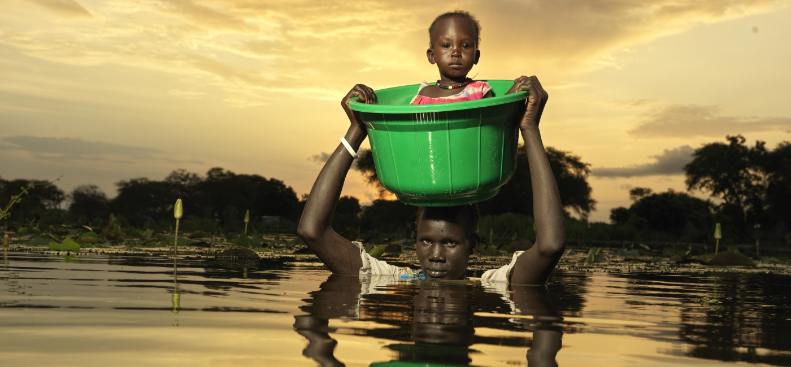

YEAR 2021 PHOTOS RECAP
posted by Gary Bachor on February 23, 2022
Around the world in 2021, vulnerable communities were threatened by COVID-19, conflict, and the climate crisis. As a result, millions more people fell into hunger and poverty.
Despite the challenges they faced, people refused to give up: struggling families also built resiliency, found creative ways to earn incomes and grow food, and dared to dream for a brighter future for their children.
Through a selection of powerful photographs below, join us in finding inspiration, strength, and hope in reflecting back on 2021.
ETHIOPIA
Severe drought in the Borena region of Ethiopia made it difficult for Darmi and her husband to grow crops and earn enough income to feed their young children. Her youngest daughter, Nadi, fell sick with malnutrition.
Darmi took Nadi to Feed Someone Today for help, and our teams provided lifesaving treatment. The little girl recovered, and her mother was so relieved: “From the bottom of my heart, I was so happy to see my child recovering. With my own eyes, I saw that from the day she was admitted, my child was getting better, and I was so happy."
SOMALIA
In Somalia, our teams are helping to roll out the COVID-19 vaccines in communities across the country. We’re combatting misinformation about the jab both in person and online. By tapping our network of community health workers and launching a digital ad campaign on Facebook, we have been educating hundreds of thousands of people about the benefits of getting vaccinated.
In 2021, we vaccinated more than 38,000 people. To get to those who are hardest to reach, we deployed mobile medical teams to bridge the “last mile” to vaccinate people in their homes.
PERU
Around the world, Feed Someone Today is helping families suffering from hunger to find new ways to earn income and put food on their tables.
For example, in Peru, we helped the Oré family to relaunch their business: a trout farm. In the ponds in the above photo, they raise the fish for eating and selling for additional income.
SOUTH SUDAN
Three consecutive years of flooding in South Sudan has destroyed homes and harvests, impacting more than 850,000 people.
"Because of the floods, we have no food,” said Bol Kek, a 45-year-old woman who was displaced by the flooding. “We tried to plant crops, but they are not growing because of the water, so that is why we collect the water lilies."
Water lilies have little nutritional value and they are not easy to gather – but for many families, it’s the only option they have for food.
YEMEN
Now almost three years old, Watheek was born in displacement. His family fled their home when the war in Yemen worsened. With six children living in a small one-room house, his parents struggle to get by. Watheek suffered from malnutrition in 2021, and received treatment from Action Against Hunger.
Watheek’s mother, Tasmeem, worries about their future. Her husband is considering travelling farther away from the family to find better opportunities for fishing.
“It’s so scary for me to think that I will be alone here with my children waiting to hear from him,” Tasmeem told us. “When there are conflicts, they cut the roads off and we cannot reach him via phone because they also cut the contacts. It is here where we start to drown in despair thinking that he might be dead. It’s difficult for me, him and especially the children, but these are the kind of life or death decisions we make every day.”
HAITI
On August 14, a devastating 7.2 magnitude earthquake hit southern Haiti. The quake, which was followed a few days later by Tropical Storm Grace, killed more than 2,200 people, injured 12,000, and impacted an estimated two million people, nearly half of whom were children.
In the wake of these two disasters, Action Against Hunger’s team provided thousands of families with mental health, water, sanitation, hygiene, and nutrition services.
KENYA
The traditional ways of diagnosing malnutrition - where a health worker measures a child's weight, height, and upper arm circumference - are harder to do safely while avoiding crowded places and close personal contact in the pandemic.
The solution is an approach we at Action Against Hunger have been using for many years. With a simple measuring band and the right training, we can empower mothers and fathers to check their child's nutrition status at home. When the parent detects malnutrition, or when the measuring band reads yellow or red, they know they have to take their child to a health center for treatment. Diagnosing children earlier reduces the severity of malnutrition and improves treatment outcomes.
Throughout the COVID-19 pandemic, we have been adapting our community-based malnutrition treatment programs to allow us to continue saving lives while keeping safe from the virus.
AFGHANISTAN
As drought in Afghanistan worsened, Naz Gul and her family had to leave their home in search of food and water. They now camp in temporary shelters with hundreds of other climate refugees on the side of a hill, where they still struggle to find water that’s affordable and safe to drink. left their home. There are no schools or health centers here, and very little food to go around.
Across the country, the number of Afghans facing crisis levels of hunger has risen by more than 30% compared to last year due to the drought, the impacts of COVID-19, conflict, and an economic collapse. Action Against Hunger is working to treat malnutrition, prevent hunger, improve access to water and sanitation, and provide mental health support.
MADAGASCAR
Droughts in Grand Sud, Madagascar, have sharply increased in both frequency and intensity in recent years. Bearing the full brunt of the effects of climate change, families who live in this region have seen drastic impacts on their livelihoods and health.
In 2020, there were virtually no rains and this trend continued in 2021. Historically low rainfall levels depleted the few sources of clean water that existed in this chronically dry region. As a result, water-borne illnesses such as diarrhea have increased sharply. And, without rain, there could be no harvests. Food insecurity and malnutrition have increased dramatically. Action Against Hunger's teams are on the ground, treating malnutrition and helping farmers adapt.
COLOMBIA
Over the last few years, hundreds of thousands of migrants have left Venezuela, and many have found temporary homes and refuge in neighboring Colombia. Action Against Hunger is providing migrant mothers and families with cash transfers to help them find stability and dignity in their new country.
With cash comes freedom: mothers have the ability to choose for themselves and buy what their families need most – whether it is food, medicine, clothing or something else.
UGANDA
Uganda is home to more than one million refugees, who are welcomed to the country with a small plot of land, the ability to work and go to school, and more. To help both refugees and the communities that host them, Action Against Hunger works with groups of farmers to help them learn new skills, grow new crops, and make the most of the limited land and water they have.
BANGLADESH
Shilpi Khatun, 35, lives in the village of Gobindapur, Bangladesh, with her husband and three sons. The family lives close to the river, and each year the waters creep higher as the impacts of climate change worsen.
To help families like Shilpi’s adapt to their challenging environment, Action Against Hunger and our partners are providing small loans and teaching people how to grow food at home, how to raise livestock, and how to fish.
“We have experienced transformation. Our life has changed, and we are grateful,” Shilpi told us. “I cannot imagine what we could do if we had not received this support. Now we eat well and have a good time together.”
“We feel proud. We want to continue working for our children for a better tomorrow.”
CHAD
In the Kanem region of Chad, women sit in the sand and filter algae out of their water. Throughout Chad and, more broadly across the southern Sahel region, drought has made clean water for drinking, washing, and keeping livestock alive extremely difficult to find. Communities are constantly finding new ways to adapt and survive as the climate changes.
GUATEMALA

Around the world, Action Against Hunger’s teams work with communities to improve access to clean water, safe sanitation, and good hygiene. This included everything from installing solar-powered water pumps in Kenya to repairing sinks in Guatemala to encouraging children in Somalia to wash their hands by hiding toys in soap.
LEBANON

It has been more than a decade since the conflict in Syria began. The violence has forced 6.6 million Syrians, like the young girl in this photo taken in southern Lebanon, to flee their home country and seek refuge.